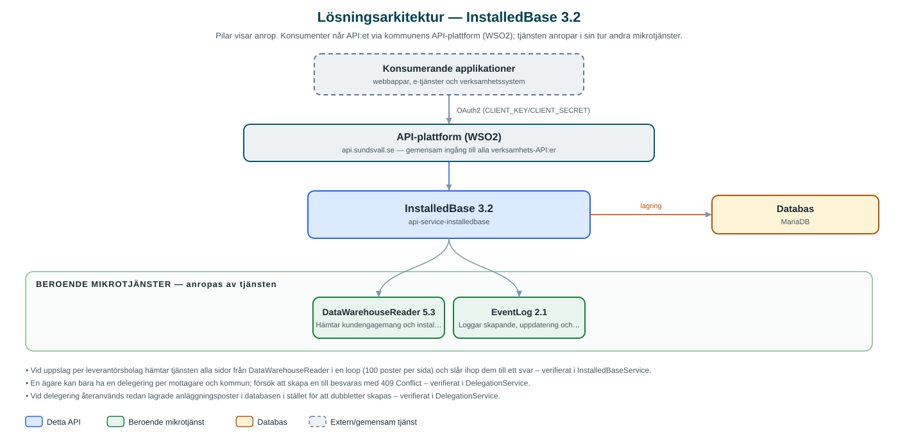

InstalledBase
Visar en parts engagemang och anläggningar (installerad bas) hos kommunens leverantörsbolag, och hanterar delegering av anläggningar mellan parter.
Om API:et
InstalledBase samlar uppgifter om vilka engagemang en invånare eller ett företag har hos leverantörer inom kommunkoncernen – till exempel el-, fjärrvärme- och renhållningsabonnemang – och vilka anläggningar som hör till engagemangen. Uppgifterna hämtas ur kommunens datalager via tjänsten DataWarehouseReader och presenteras samlat per kund, med anläggningsadresser och metadata per anläggning.
API:et kan slå upp installerad bas antingen per partyId eller per leverantörsbolag och kundnummer, med möjlighet att filtrera på ändringsdatum för att bara hämta det som tillkommit eller ändrats sedan en viss dag.
Tjänsten hanterar också delegeringar: en anläggningsägare kan delegera sina anläggningar till en annan part, till exempel för att någon annan ska kunna företräda ägaren i kommunens e-tjänster. Delegeringarna lagras i tjänstens egen databas och alla förändringar loggas som händelser i kommunens EventLog-tjänst.
Det här gör API:et
- Installerad bas per part – Hämtar en parts samtliga engagemang och anläggningar hos koncernens leverantörsbolag, uppslaget på partyId.
- Filtrering och paginering – Resultatet kan filtreras på leverantörsbolag och ändringsdatum samt pagineras och sorteras.
- Skapa delegering – En anläggningsägare kan delegera sina anläggningar till en annan part; dubbletter avvisas.
- Uppdatera och ta bort delegering – Befintliga delegeringar kan uppdateras med nya anläggningar och tas bort.
- Sök delegeringar – Delegeringar söks fram per ägare eller mottagare (delegatedTo).
- Händelselogg – Alla förändringar av delegeringar loggas som händelser i EventLog med berörda anläggningar.
API-dokumentation
API:ets samtliga resurser, parametrar och datamodeller finns beskrivna i en OpenAPI-specifikation som är hämtad ur källkodsförrådet. Den kan utforskas interaktivt i Swagger UI eller laddas ner som YAML. Programvaruförteckningen (SBOM) listar tjänstens samtliga tredjepartskomponenter med version och licens.
Teknisk dokumentation
Nedan beskrivs hur tjänsten är uppbyggd, vilka andra tjänster den anropar och vad som krävs för att driftsätta den. Informationen är härledd ur källkoden och dess konfiguration på GitHub.
Arkitektur

API:et är en mikrotjänst (Java 25, Spring Boot via kommunens gemensamma tjänsteplattform dept44 (8.0.8), byggd med Maven). Konsumenter når tjänsten via kommunens gemensamma API-plattform (WSO2) på api.sundsvall.se – tjänsten anropas aldrig direkt. Tjänsten anropar i sin tur andra mikrotjänster i kommunens tjänstelandskap. Lagring: MariaDB med Flyway-migrationer; delegeringar och deras anläggningar lagras i databasen (uppgifterna om installerad bas lagras inte utan hämtas vid varje anrop).
Teknikstack
- Språk: Java 25
- Ramverk: Spring Boot via kommunens gemensamma tjänsteplattform dept44 (8.0.8), byggd med Maven
- Databas: MariaDB med Flyway-migrationer; delegeringar och deras anläggningar lagras i databasen (uppgifterna om installerad bas lagras inte utan hämtas vid varje anrop)
- Övrigt: Resilience4j-circuit breaker mot DataWarehouseReader
Beroenden till andra mikrotjänster
Tjänsten anropar följande mikrotjänster. Versionerna är hämtade ur källkodens integrationsklienter.
| Tjänst | Version | Användning |
|---|---|---|
| DataWarehouseReader | 5.3 | Hämtar kundengagemang och installerad bas ur kommunens datalager. |
| EventLog | 2.1 | Loggar skapande, uppdatering och borttag av delegeringar som händelser. |
Programvaruförteckning
Tjänsten bygger på 296 tredjepartskomponenter fördelade på 14 olika licenser. Till skillnad från tabellen ovan, som listar andra mikrotjänster, avses här de programbibliotek som ingår i bygget. Se programvaruförteckningen för hela listan.
Konfiguration och driftsättning
- application.yml med URL och OAuth2-klientuppgifter för DataWarehouseReader och EventLog
- MariaDB-anslutning; databasschemat versionshanteras med Flyway
- Lång läs-timeout (110 s) mot DataWarehouseReader eftersom uppslagen i datalagret kan ta tid
- Anrop görs per kommun – municipalityId ingår i alla API-vägar
Noterbart ur källkoden
- Vid uppslag per leverantörsbolag hämtar tjänsten alla sidor från DataWarehouseReader i en loop (100 poster per sida) och slår ihop dem till ett svar – verifierat i InstalledBaseService.
- En ägare kan bara ha en delegering per mottagare och kommun; försök att skapa en till besvaras med 409 Conflict – verifierat i DelegationService.
- Vid delegering återanvänds redan lagrade anläggningsposter i databasen i stället för att dubbletter skapas – verifierat i DelegationService.
- Varje förändring av en delegering skickas som händelse till EventLog med anläggnings-id och organisationsnummer i metadata – verifierat i DelegationService.
Källkod
Källkoden är öppen och finns hos Sundsvalls kommun på GitHub. I källkodsförrådet finns även instruktioner för att klona, konfigurera och starta tjänsten i egen miljö.